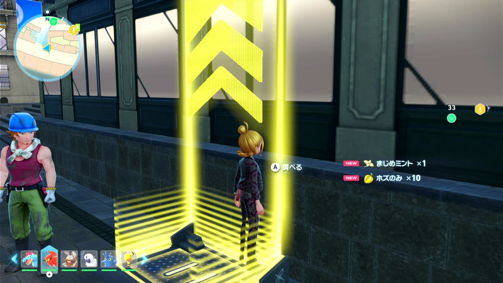
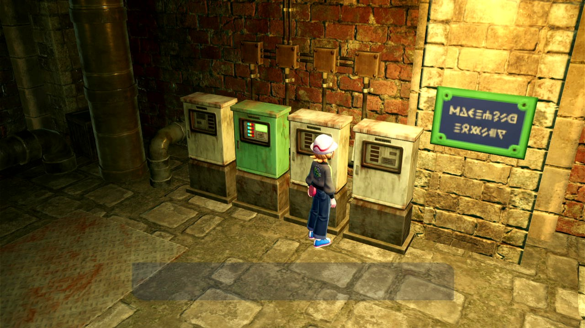
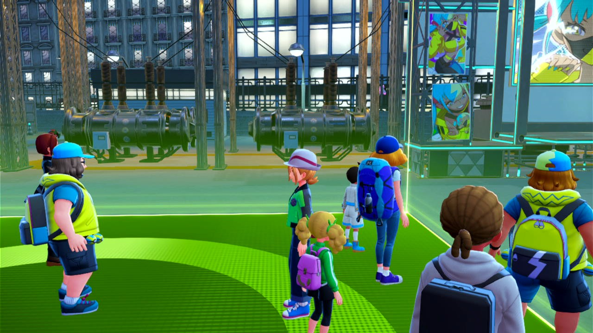

2026-10-26 / ZA Story
会話後の視点を保つため、類似19箇所の追加Lを抑止
HOTEL_Z_68と同じ問題を避けるため、会話・床選択・端末操作の後で視点調整より先に固定移動を行う箇所と、共通回復・ベンチ処理を修正しました。19箇所のA待機中のLを抑止し、そのうち5箇所は直前に追加されていたLも撤去しました。前回修正の68番と合わせて20箇所です。
A表示確認、移動角度と時間、A入力、既存の待機・復旧は維持しています。ゾーン入場や後続で明示的に視点を合わせる経路は現状を維持しました。
ソースへ反映済み。Commandsを停止してF5 Reloadで読み込み直してください。稼働中PokeConへの入力・Reload・再起動は行っておらず、修正後の実機通過は未確認です。
対象と理由
checked_movement_actionの175呼出箇所を起点に、会話後の遷移と視点調整の順序を確認。全場面・全分岐の実機動作を保証するものではありません。動画欄は既存のZIP動画目視記録を引用し、今回の保存画像検査と区別しています。
| 箇所 | 後続経路・判断理由 | 変更 | 参照動画・保存画像 |
|---|---|---|---|
_1_story_hote_z_move3現ソース 23472行 | AZ会話後、MOVE4の90度移動が視点合わせより先。 | 待機L抑止 | 22Lc8za8OfQ / 872秒：A 話しかける 保存1枚で一致 |
_1_story_out_hotel_z_6現ソース 23733行 | 会話7の後、8の90度14秒移動が先。 | 待機L抑止 | 22Lc8za8OfQ / 1698秒：A 話しかける。既存の狭い範囲のCHAT判定は外れている 保存1枚では不一致（入力直前の保証なし） |
_1_story_out_hotel_z_49現ソース 24895行 | 会話50の後、51の90度移動が先。 | 待機L抑止 | 22Lc8za8OfQ / 2899秒：A 話しかける 保存1枚では不一致（入力直前の保証なし） |
_1_story_out_hotel_z_62現ソース 25016行 | 会話63の後、64の87度移動が先。 | 直前Lも撤去＋待機L抑止 | 22Lc8za8OfQ / 3228秒：NPC前。直前のA表示はこのフレームでは不鮮明 保存1枚では不一致（入力直前の保証なし） |
_1_story_out_hotel_z_72現ソース 25117行 | 会話73の後、74の複数方向移動が先。 | 直前Lも撤去＋待機L抑止 | 22Lc8za8OfQ / 3588秒：壁で人物が隠れ、直前A表示は不鮮明 保存1枚では不一致（入力直前の保証なし） |
_1_story_out_hotel_z_80現ソース 25203行 | 会話81の通常完了後、82の90度20秒移動が先。 | 待機L抑止 | 22Lc8za8OfQ / 3735秒：A 話しかける 保存1枚では不一致（入力直前の保証なし） |
_2_story_absol_move25現ソース 29301行 | 会話26の後、27の270度移動が先。 | 待機L抑止 | eT3JufDRpew / 742秒：A 話しかける 保存1枚では不一致（入力直前の保証なし） |
_3_story_canari_13現ソース 30184行 | 会話14の通常完了後、15の100度移動が先。 | 待機L抑止 | mjX0QjBRpuA / 68秒：A 話しかける 保存1枚では不一致（入力直前の保証なし） |
_3_story_canari_15現ソース 30213行 | クイズ受付の会話・選択15〜22の後、23の190度移動。視点復元をコードで保証していない。 | 待機L抑止 | mjX0QjBRpuA / 113秒：A 話しかける 保存1枚で一致 |
_3_story_canari_23現ソース 30284行 | クイズの床を決定後、25の350度移動が先。 | 直前Lも撤去＋待機L抑止 | 今回の分類はソースと保存画像を参照。 保存1枚では不一致（入力直前の保証なし） |
_3_story_canari_25現ソース 30308行 | クイズの床を決定後、27の190度移動が先。 | 待機L抑止 | mjX0QjBRpuA / 247秒：A 決定（クイズの床） 保存1枚では不一致（入力直前の保証なし） |
_3_story_canari_27現ソース 30331行 | クイズの床を決定後、29の90度移動が先。 | 待機L抑止 | mjX0QjBRpuA / 286秒：A 決定（クイズの床） 保存1枚では不一致（入力直前の保証なし） |
_3_story_mega_move22現ソース 30708行 | 会話23の後、24の87度から始まる固定移動が先。 | 待機L抑止 | mjX0QjBRpuA / 4208秒：A 話しかける 保存1枚では不一致（入力直前の保証なし） |
_4_story_shiro_72現ソース 31937行 | 装置操作・会話73の後、74の50度移動が先。 | 直前Lも撤去＋待機L抑止 | 今回の分類はソースと保存画像を参照。 保存1枚では不一致（入力直前の保証なし） |
_5_story_karasuba_65現ソース 33049行 | 会話66の後、入口67の90度0.5秒移動が先。 | 待機L抑止 | DHVY6rsajPM / 1196秒：A 話しかける 保存1枚では不一致（入力直前の保証なし） |
_7_story_guri_111現ソース 36035行 | カードキーCの装置操作後、113の100度移動が先。 | 待機L抑止 | l_MzEJK1KeM / 2716秒：A 調べる 保存1枚では不一致（入力直前の保証なし） |
ZA_Benchi現ソース 38597行 | 共通ベンチ。再度の時間変更でsleepcountに応じた270度移動を行うため、呼出元の視点を保持。 | 待機L抑止 | BLM81UP9V5I / 2132秒：A 休む 保存画像なし |
ZA_Common_pokemon_recovery現ソース 39146行 | 共通の回復会話。成功後の移動は呼出元が決めるため、視点を変えない。 | 待機L抑止 | 22Lc8za8OfQ / 5144秒：A 話しかける（回復窓口） 保存画像なし |
ZA_bench_change_time現ソース 39914行 | 敗戦／チケット用回復会話。次のBENCH_MAP_OPENにはマップを開けない場合の90度移動がある。 | 直前Lも撤去＋待機L抑止 | BLM81UP9V5I / 2387秒：回復窓口へ移動中。Aはこのフレームでは未確認 保存画像なし |
用途を区別した例

ugB3vep1qMI / 2621.900秒・ZIP原画像

u3_WGptNscg / 722.050秒・ZIP原画像

mjX0QjBRpuA / 212.583秒・ZIP原画像
GURI_42・YUKARI_37・SHIRO_45などは入場／場面切替。YUKARI_50は昇降装置。YUKARI_21のように後続の移動前にEVENTへ視点を合わせる経路、戦闘・ワープ・ロードを挟む経路も今回のL撤去対象から除外しています。CANARI_15はコード上で後続視点の復元を保証していないため、元の視点を保つ側へ修正しました。
確認結果
修正前は新規5テストで48件の失敗（subtestを含む）を再現。修正後は関連77テストが成功。A即表示・遅延・欠測、繰返し呼出し、Stop、会話開始済み判定、対象外のゾーン入口のL維持を検査しました。
必須全体テスト：Ran 878 tests in 701.240s / FAILED (failures=19, errors=8, skipped=1)。直前の基準と同じ27診断名で、追加0件。全体成功ではありません。
ZIP原画像を16枚、変更していない実判定へ入力し2枚が一致、14枚が不一致。3箇所は既存抽出画像なし。保存画像はStep開始や移動途中を含み、対象NPCのA入力直前とは限らないため、14箇所でA検知できないという結論にはなりません。同様に一致2枚だけで該当経路の実機成功は証明できません。
Origin・stock・配布ZIP・clean DevStudio文書、および共通断片2種と同期メタデータを更新。変更は19個の引数と5個の追加L撤去に限定し、対象外のAST、ZIPの他437ファイルと順序・メタデータ、他のDevStudio文書を保持しました。
ソースSHA256：b55cccad44c1881d281868ecec9b40b09bf84c0762bbeea80a1553a4bb4a98d7